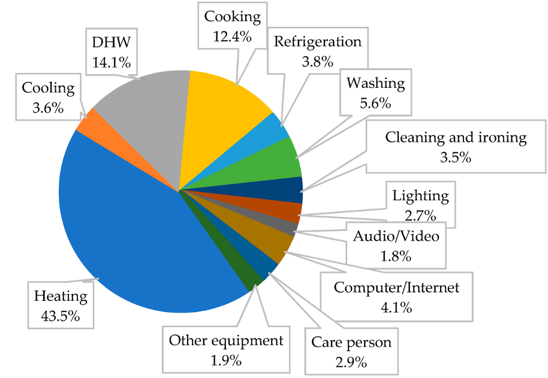

This mini-lecture introduces the concept of the residential sector
Energy is used for many different reasons in the residential sector, as shown by Figure 6.1.1. This image shows teh share of residential energy by service demand/ We can see that energy is used for many different purposes, from heating and cooking to clearning and ironing. This split of energy demand will vary across different countries. Figure 6.1.1 shows residential energy demand in Italy, which will differ to countries in Asia, for instance. This is largely dependent on different climates, levels of development and lifestyles.

Figure 6.1.1: Residential sector and the different demands (Mancini, Lo Basso, and De Santoli 2019)
The total magnitude of energy demand also varies by country as a total value, but also as energy demand per capita. This is strongly dependent on the level of electricity access and availabiltiy of other fuels in the country. Residential activities can use different forms of energy. For example, cooking can be met by burning biomass, oil products, natural gas or electricity. The fuels used vary by country.
Some of the key residential technologies include lamps, cooking stoves, heating and air conditioning systems, as well as other electrical appliances. Some of these technologies can only use one fuel, such as electrical appliances and air conditioning which rely on electricity.
However, in other cases multiple different fuels can be used for the same purpose. For example, heating. Heating can be met by burning biomass, natural gas, oil or electricity, for instance. These technologies have differing performance parameters. For example, electric stoves are usually much more efficient than biomass stoves. Different technological options also have different impacts on the environment and on human health. For example, the emissions from biomass can have detrimental impacts to human health, whereas electric stoves do not have emissions in the home.
It is possible to model these different options in MUSE, which allows us to gain insights into their environmental and cost implications. Modelling can allow us to model the entire system as a whole, understand the trade-offs between certain technologies and make decisions on which policies to implement.
Within MUSE we can model different technology options. For instance, if we are to model an electric stove and a biomass stove we would have different inputs (CommIn.csv file). However, we would have the same output (CommOut.csv file) of cooking demand. We can also model an increase in efficiency of a technology by lowering the value in the CommIn.csv file. We can also consider the costs of investing in more energy efficient appliances by increasing the cost of these high efficiency appliances relative to the low efficiency appliances. By doing this, we can understand where and when investments in energy efficiency might be economic.
In this lecture we have explored the residential sector. We explored the different demands that can reside within the residential sector and the different technologies that can be used to meet these demands. We also learnt of the difference in demands between countries and how we can model different technologies within MUSE.